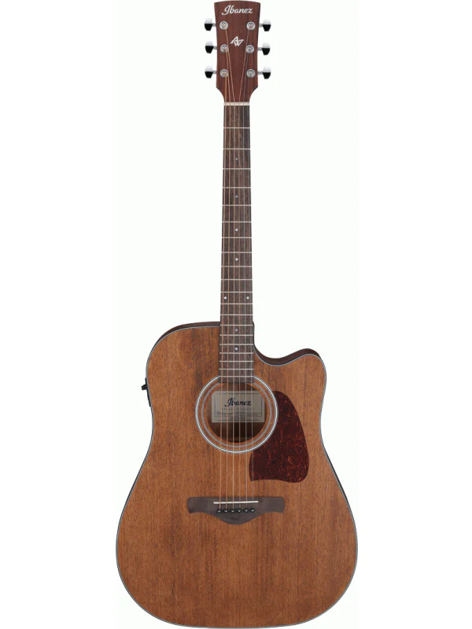

Fender Stratocaster
Fender Stratocaster, 1954 yılında Leo Fender tarafından tasarlanan efsanevi bir elektrikli gitar modelidir. Genellikle üç tek bobinli manyetik pikap, kayın veya gül ağacı gövde, geniş bir renk yelpazesi ve ikonik çift konturlu tasarımı ile bilinir. Stratocaster, rock, blues, pop ve birçok müzik türünde kullanılan çok yönlü bir gitardır.
6000₺Gibson Les Paul
Gibson Les Paul, 1952 yılında piyasaya sürülen klasik bir elektrikli gitar modelidir. Kalın, tek parça gövdesi genellikle maun ağacından yapılır ve genellikle kavisli üst kısmı vardır. Les Paul, humbucker manyetik pikapları ile tanınır, bu da daha güçlü ve az gürültülü bir ton sağlar. Les Paul, rock, hard rock ve heavy metal gibi türlerde sıkça tercih edilen bir gitardır.
7000₺Ibanez RG Series
Ibanez RG Serisi, özellikle metal ve rock gitaristleri arasında popüler olan bir modeldir. Hafif ve hızlı çalınabilir yapısıyla bilinir. İnce ve hızlı sap profili, genellikle tremolo sistemli köprüleri ve geniş tonal çeşitliliği ile dikkat çeker. RG Serisi, teknik gitar çalımı ve yüksek hızlı riffler için ideal bir seçenektir.
8000₺Steinway & Sons Model D
Steinway & Sons Model D, dünyanın en ünlü ve saygın konser grand piyanolarından biridir. Yüksek kaliteli malzemelerden yapılmış, geniş bir tonal aralığa sahip ve hassas bir tuş tepkisi ile bilinir. Müzisyenler arasında konserlerde ve stüdyo kayıtlarında tercih edilen bir piyano modelidir.
6100₺Yamaha CFX
Yamaha CFX, Yamaha'nın konser grand piyano serisine ait bir modeldir. Modern tasarımı, geniş tonal paleti ve dengeli bir sesi ile tanınır. CFX, klasik müzik, konserler ve kayıt stüdyoları için tercih edilen bir seçenektir. Aynı zamanda Yamaha'nın uzun bir geleneğine dayanmaktadır.
7100₺Kawai RX-7
Kawai RX-7, Kawai'nin popüler bir grand piyano modelidir. Güçlü bir ses ve hassas bir tuş hissi sunar. Kawai, kaliteli enstrümanları ile bilinir ve RX-7, genellikle konser salonlarından stüdyolara kadar çeşitli ortamlarda kullanılan bir piyano modelidir.
8100₺Stradivarius
Antonio Stradivari tarafından 17. ve 18. yüzyıllarda İtalya'da yapılan Stradivarius kemanları, tarihsel olarak en değerli ve aranan keman modellerinden biridir. Yüksek kaliteli ahşap, ustaca yapı ve eşsiz ses projeksiyonu ile bilinirler. Bu kemanlar, klasik müzik dünyasında özellikle konser ve solo performanslarda tercih edilir.
6200₺Guarneri del Gesù
Giuseppe Guarneri del Gesù, Stradivarius'un çağdaşı olan bir diğer ünlü keman yapımcısıdır. Onun tarafından yapılan kemanlar da son derece değerli ve öne çıkan enstrümanlardır. Guarneri kemanları, sıcak tonları, güçlü projeksiyonu ve benzersiz karakterleri ile bilinir. Özellikle romantik dönem müziği icralarında tercih edilirler.
7200₺Ming-Jiang Zhu
Ming-Jiang Zhu, günümüzde ünlü bir keman yapımcısıdır ve kendi adını taşıyan keman modelleri ile tanınır. Bu kemanlar, uygun fiyatlı olmalarıyla birlikte kaliteli zanaat işçiliği ve iyi bir ton sunma özellikleriyle dikkat çeker. Ming-Jiang Zhu kemanları, öğrencilerden profesyonel müzisyenlere kadar geniş bir kullanıcı kitlesine hitap eder.
8200₺DW Collector's
DW (Drum Workshop) Collector's Series, profesyonel bateristler arasında yaygın olarak tercih edilen bir bateri setidir. Kaliteli malzemeler, özel üretim teknikleri ve özelleştirilebilir özellikleriyle bilinir. DW Collector's Series, geniş tonal paleti, dayanıklılık ve özel tasarım seçenekleri sunarak çeşitli müzik tarzlarına uyum sağlar.
6300₺Pearl Export
Pearl Export Series, uygun fiyatlı olmasına rağmen kaliteli bir performans sunan bir bateri setidir. Pearl'ün uzun bir geçmişe sahip olan Export Serisi, dayanıklılığı, çeşitli renk ve konfigürasyon seçenekleri ile öne çıkar. Hem yeni başlayanlar hem de deneyimli bateristler arasında popülerdir.
7300₺Mapex Saturn
Mapex Saturn Series, üst düzey performans ve ton kalitesi sunan bir diğer popüler bateri modelidir. Ahşap ve metal karışımı kaplama seçenekleri, zengin tonları ve dayanıklı yapıları ile bilinir. Bu seri, çeşitli müzik tarzlarına uygunluğu ile dikkat çeker ve profesyonel bateristler arasında tercih edilir.
8300₺